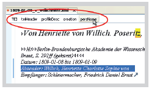
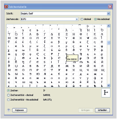

Wie erstelle ich schnell einen neuen Absatz?
Setzen Sie den Cursor an das Ende des Absatzes. Betätigen Sie dann zweimal die Taste [Enter]. Beim ersten Mal erscheint „Teilen p“ was nichts anderes bedeutet, dass der bisherige Absatz an dieser Stelle geteilt wird und somit ein neuer Absatz erstellt wird. Mit [Enter] bestätigen Sie die Aktion „Teilen p“.
Wie lösche ich ein einfaches Element in der Autorenansicht?
Einfaches Element: gehen Sie mit dem Cursor hinter das Element, d.h. in der Autorenansicht hinter das Dreicksymbol. Drücken Sie nun die Löschentaste. Das Element – nicht aber sein Inhalt – sind nun gelöscht.
Wie kann ich Erstellungsdatum, Empfänger, Adressat oder Schreibort ändern?
Klicken Sie in das Element und wählen Sie dann das ganze Element mit Hilfe des Elementpfades am oberen Rand des Textfensters aus und drücken die Löschtaste. Danach können Sie über die Funktionen im Menü „Briefe“ wie gewohnt die korrekten Daten notieren.
Wie lösche ich indizierte Stellen in der Autorenansicht?
Löschen Sie einfach die Start- bzw. Endmarkierung einfach mit Hilfe der Löschentaste oder der Entfernentaste.
Wie lösche ich ein verschachteltes Element in der Autorenansicht?
Ein verschachteltes Element ist eine Element, das ein oder mehrere Kindelemente ent- hält, wie z.B. die Sachanmerkungen. In fast allen Fällen müssen alle Elemente der Konstruktion gelöscht werden. Im Fall der Sachanmerkungen also <seg>, <orig> und <note>.
- Das Kindelement, das mitsamt Inhalt gelöscht werden soll (z.B. die Sachanmerkung, also <note>) wählen Sie per Dreifachklick (!) aus und löschen es dann komplett mit der Löschtaste. Wahlweise können Sie auch den Elementpfad am oberen Rand des Textfensters zur Auswahl benutzen
- Klicken Sie in das Kindelement, dessen Inhalt stehen bleiben soll (z.B. der Text auf den sich die Sachanmerkung bezieht, also <orig>), und löschen Sie das den Inhalt umgebende Element mit der Tastenkombination [Alt] + [Umschalt] + [X].
- Wiederholen Sie Schritt 2 für das übergeordnete Element, das bisher beide Elemente umschloß (hier <seg/>).
Wie füge ich griechischen Text ein?
- Setzen Sie den Cursor an die Stelle, an der der griechische Text eingegeben werden soll
- Wählen Sie im Menü „Bearbeiten“ (oben links) den Punkt „Einfügen von Zeichentabelle“
- Wählen Sie im erscheinenden Dialogmenü eine andere Schrift, die möglichst viele griechische Schriftzeichen enthält; empfehlenswert ist z.B. „DejaVu Serif“ (kann bei Bedarf installiert werden)
- Scrollen Sie in der Zeichenübersicht bis zu den griechischen Zeichen oder geben Sie im Feld Zeichencode den Codepoint „U+0370“ ein (rechts muss „Hexadezimal ausgewählt sein)
- Fügen Sie die gewünschten Zeichen per Doppelklick in das Dokument ein, solange bis Sie den gesamten Textabschnitt eingeben haben. Danach können Sie das Dialogfenster Zeichentabelle schließen.
- Danach markieren Sie den fremdsprachigen Textabschnitt mit <foreign>
Diese Anleitung gilt natürlich auch analog für Hebräisch und andere Fremdsprachen mit nichtlateinischem Zeichensatz.
Die Werkzeugleiste ist plötzlich weg! Wie bekomme ich sie wieder?
- Sie befinden sich im Textmodus, d.h. Sie betrachen gerade den Quellcode der XMLDatei. In diesem Ansichtsmodus steht die Werkzeugleiste mit den Textbearbeitungsfunktionen nicht zur Verfügung. Wechseln Sie über das Menü unten in den Auto47 renmodus zurück.
- Sie befinden sich im Autorenmodus, aber das Fenster ist (aus verschiedenen Gründen) zu
klein, um die gesamte Werkzeugleiste darin unterzubringen. Eigentlich sollten nur die
Schaltflächen und Menüs nicht zu sehen, sein, für die der Platz nicht mehr gereicht hat. Sie
können aber über das Symbol >> am rechten Rand wieder aufgerufen werden. Manchmal „schnurrt“
die Werkzeugleiste aber auch auf das erste Symbol
 zusammen.
Hier reicht es aus, die Fensterbreite zu vergrößern und dann auf >> doppelzuklicken.
zusammen.
Hier reicht es aus, die Fensterbreite zu vergrößern und dann auf >> doppelzuklicken.
Was hat es mit „profileDesc” auf sich?
Das Element <profileDesc> beinhaltet im teiHeader die Angaben zur Enstehung des Manuskripts. Bei den Briefen wird hier z.B. das Absendedatum sowie Absender und Empfänger eingetragen werden. Fehlen diese Standardangaben, so zeigt der XML-Validierer am unteren Fensterrand einen Fehler an, wie z.B.:
element „profileDesc“ incomplete; missing required element „creation“
Bei neu angelegten Dateien – wie z.B. den importierten Briefen – fehlen diese Angaben, sie können über die jeweiligen Punkte in dem entsprechenden Menü (Briefe, Vorlesungen bzw. Tageskalender) nachgetragen werden.
Oxygen XML meldet „Der eingefügte Inhalt ist an dieser Stelle nicht erlaubt“.Was soll ich tun?
Unter Umständen kann es vorkommen, dass Oxygen XML beim Arbeiten mit Elementen das Problem meldet: „Der eingefügte Inhalt ist an dieser Stelle nicht erlaubt“. Das passiert dann, wenn eine Einfügung von Elementen nicht dem Schema entsprechen würde. Oxygen XML bietet dann mehrere Optionen an, wie das Element stattdessen schemakonform eingefügt werden könnte. Grundsätzlich sind alle Optionen außer „at current position, even if invalid“ empfehlenswert. Wenn Sie Fragen haben oder diese Meldung öfters auftaucht wenden Sie sich einfach an uns.
In welchen Fällen muss ich ein Lemma eigens notieren?
In den meisten Fällen kann das Lemma aus dem Element selbst automatisch herausgelesen werden – es muss nicht extra markiert werden. Bei den Elementen <del> und <supplied> muss es jedoch eigens im Attribut prev (vorangehendes Lemma) bzw. next (nachfolgendes Lemma) notiert werden.
Wie kann ich statt einem vorangehenden Lemma ein nachfolgendes Lemma notieren?
Im Autorenmodus steht mit der Schaltfläche für <del> bzw. <supplied> nur die Möglichkeit zur Verfügung, ein vorangehendes Lemma zu notieren. Sollte es nötig sein, ein nachfolgendes Lemma zu notieren, so muss in den Textmodus gewechselt werden (sie- Siehe hierzu auch die Abschnitte „Metadaten“ auf den S. 27, 33 bzw. 37. 48 he „Ansichten“ auf Seite 14) und dort im betroffenen Element <del> bzw. <supllied> das Attribut prev mitsamt seinem Wert gelöscht werden. Anstelle dessen kann dort das Attribut next mit dem entsprechenden Wert notiert werden. Beispiel:
er<del next=”geht”>ging </del> geht nach Hause
Wie kann ich Lemmata formatieren?
Der Wert des Attributs prev bzw. next kann in geringem Maße für die Druckausgabe formatiert werden:
Gesperrt _Lemma_ Unterstriche
Kursiv Lem/ma/ Schrägstriche
Fett *Lemma* Sternchen